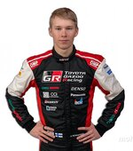

Back in 1973, racing officials selected 12 rallies (2021) from around the world and organized them into a series featuring contestants competing for the World Championship. That was the starting point for today’s World Rally Championship (WRC). For more than 40 years, the WRC has been the pinnacle of sprint rally racing. In Europe and Latin America, where many of the rallies are held, the WRC rivals F1 racing in popularity. Toyota got its start in motor sports in 1957 when we entered the Mobilgas Round Australia Rally. Our first WRC victory was in 1975 at the 1,000 Lakes Rally with our factory-backed team. We went on break numerous records and claimed many more victories, including three consecutive Safari Rally wins. In 1990, Toyota had its first WRC champion driver. In 1993 we were the first Japanese brand to win the WRC manufacturer’s title. Together with Mitsubishi and Subaru, Toyota brought a great deal of excitement to the events, and helped shape a golden age of Japanese rally cars.
Elfyn Evans
Kalle Rovanperä
Takamoto Katsuta
Sébastien Ogier